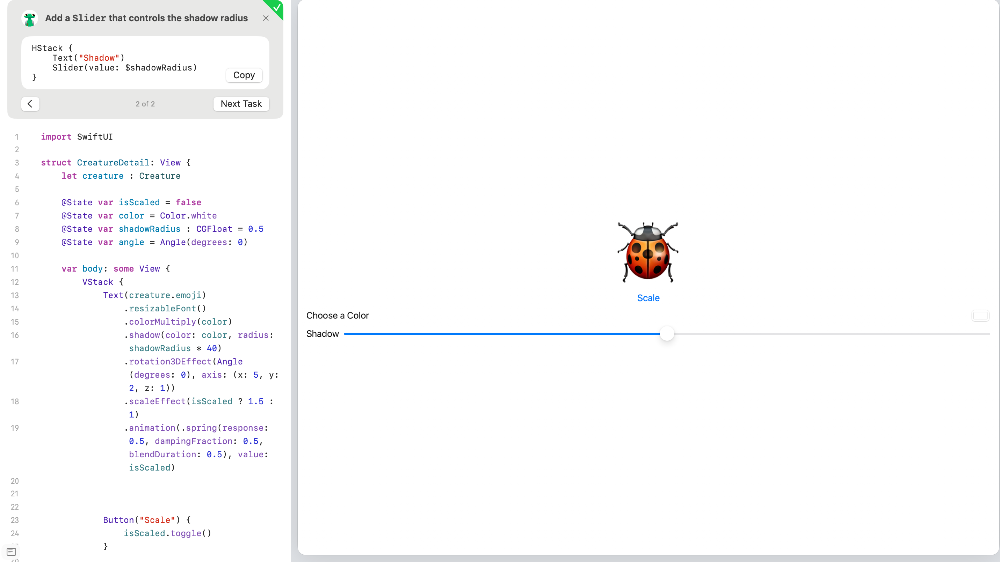
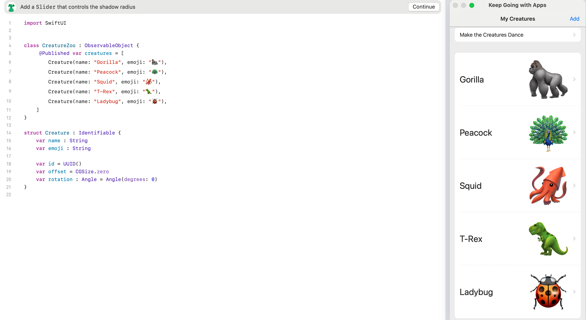

Concepts Covered
- Button Command: Instructions that execute when a user clicks a button, often used for user interactions.
- Modifiers: Key combinations or buttons that change the behavior of commands, enhancing functionality.
- Text Creation: Methods to dynamically generate and manipulate text within an application, often using input from users.
- Navigation Link: Hyperlinks that allow users to move between different sections or pages of an app or website, improving usability.
Visuals and Media
Here are some resources related to this module:

